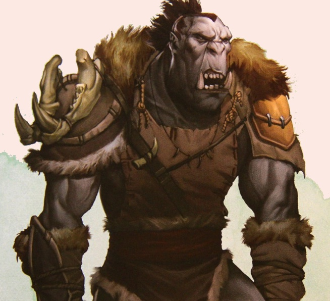

Les orcs
Engeances d’elfes corrompus par quelque dieu sombre qui exigeait une race maléfique pour l'adorer, ou conçus pour être le fléau des races dites « bonnes », quelle que soit leur véritable origine (les orcs ayant leur propre mythe sur leur création, différent de ceux-ci) le résultat est identique. Les orcs se sont propagés à travers le monde et on en trouve à peu près dans tous les royaumes, partout en nombre substantiel.
Physiologie
Orcs are savage raiders and pillagers with stooped postures, low foreheads, and piggish faces with prominent lower canines that resemble tusks.
Grands, larges et musclés, les orcs semblent bâtis pour la guerre. Ils mesurent entre 1,60 et 2,20 mètres de haut, mais paraissent souvent plus petits car ils ont tendance à se voûter ou se pencher, en particulier lors des charges durant une bataille. Eux disent qu'ainsi les races les plus petites ne peuvent leur échapper, mais la plupart des érudits estiment pour leur part que le squelette orc a simplement du mal à se redresser sous leur imposante masse musculaire. Les orcs qui arrivent à un âge avancé souffrent immanquablement de problèmes de dos et portent souvent en conséquence des corsets de cuir clouté qui leur apportent un certain soulagement et leur donne une meilleure forme. Quelques orcs voient cela comme un signe de faiblesse, mais les anciens qui ont tenu jusque-là sont souvent assez rusés pour contenir ces trouble-fêtes.
Comme chez les humains, un orc donné peut avoir une allure très différente d’un autre orc. Les apparences sont disparates et varient du point de vue de la peau, des cheveux, de la couleur et de la forme des yeux, ainsi qu’au niveau des vêtements et des coupes de cheveux. Chaque tribu orc parle son propre dialecte orc, si bien que des tribus orcs voisines ont parfois des difficultés à se comprendre mutuellement. Pour cette raison, la plupart des orcs parlent également le commun, même s’ils le font avec de grandes difficultés. Un orc préfère en fait parler avec sa hache plutôt qu’avec sa bouche.
La gamme de pigmentation de peau des orcs varie du vert au gris. Leurs cheveux sont généralement sombres et touffus et peuvent prendre toutes les teintes du blond foncé au noir de jais. Quelques orcs portent les cheveux courts mais il est plus courant d'en voir avec des cheveux longs, parfois tressés. Certaines tribus arborent également des dreadlocks, souvent teints du sang de leurs victimes. Les yeux d'un orc peuvent prendre n'importe quelle couleur, du bleu pâle au noir charbon, avec une majorité couleur rouge. Les orcs mâles ont une pilosité sur pratiquement tout leur corps. Cette fourrure épaisse et touffue est presque toujours brune ou noire. Beaucoup d'orcs plus matures portent aussi la barbe, mais ils ne la portent habituellement pas aussi épaisse que les nains ou les gnomes. Leurs frères plus jeunes, quant à eux, la portent généralement courte ou se rasent plutôt que d'avoir à l'entretenir. Sinon, leur barbe est généralement souillée d'aliments, de boisson ou de mrog. Les oreilles des orcs sont pointues et leur nez est habituellement plat et retroussé, exposant leurs narines qui se dilatent largement lorsqu'ils sont en colère. Ils ont aussi des dents pointues et aiguisées, horriblement disposées. Leur terrifiante mâchoire inférieure est tellement proéminente qu'elle dévoile de longues canines saillantes, dépassant de leur lèvre inférieure et allant souvent jusqu'à presque toucher leur nez. Tout cela rend l’apparence des orcs telle que l’on pourrait croire leurs ancêtres issus d’un croisement d’humains et de sangliers sauvages.
Alimentation
LE MROG
La boisson préférée des orcs est le mrog, un hydromel noir à base de miel fermenté et de sang. Il possède une couleur cuivrée et un goût sucré que beaucoup d’orcs comparent au goût de la peur dans l'âme de leur proie. La plupart des armées orcs transportent plusieurs barils de mrog avec eux, ce qui rend souvent le chemin plus long. La recette du mrog est aussi simple que brutale, et il est considéré meilleur s’il a séjourné dans des fûts pendant au moins une semaine.
Le mrog est souvent appelé par le type de sang qu'il contient. Ainsi, parmi les types courants, le mrog d’elfe et de nain sont les plus renommés, bien que le mrog de dragon soit considéré comme étant le meilleur. Bien entendu, une telle boisson est suffisamment rare pour que seul un petit nombre d’orcs n'y aient jamais goûté. Les autres devant les croire.
Dans les grandes villes orcs, quelques tavernes mélangent plusieurs types de mrogs pour produire des saveurs inhabituelles. Mais les orcs préfèrent généralement leur propre mrog. Les marques les plus célèbres ont toutefois des fidèles. Il s'agit notamment de la Mort Naine, du Crâne de Pirate et du Vieux Gosier d’Elfe.
Les orcs sont techniquement omnivores, mais ils préfèrent par-dessus tout la viande. Lorsqu'il n'est pas en guerre, l’orc mâle passe la plupart de son temps à chasser pour avoir de la viande fraîche, car il a rarement la patience de s'occuper du bétail. La plupart du temps, les rares troupeaux supervisés par les orcs sont rapidement décimés, souvent par les éleveurs eux-mêmes, qui ont du mal à résister devant un tel repas avec des proies aussi faciles à proximité. Beaucoup d’orcs ne se soucient pas de cuire leurs victimes, sauf si la viande à plus de deux ou trois jours, car ils préfèrent le goût du sang frais. Les femelles, qui ne sont que rarement, voire jamais, admises à la chasse, n'arrivent presque jamais à jouir de ce privilège. Il leur est donc dévolu de cuisiner les restes de nourriture plus tard.
Les orcs ne sont pas dépendants du sang comme les vampires, mais ils en aiment la saveur. Ils affirment qu’une proie qui a eu peur juste avant d’avoir été tuée a meilleur goût, en raison de la crainte qui a coulé à travers ses veines. Les créatures qui ont eu peur de la mort sont donc les plus prisées, et c'est une des raisons pour lesquelles les orcs cultivent les apparences les plus effrayantes qu'ils peuvent. Dans la fureur de la bataille, il est normalement impossible pour un orc de s'arrêter pour se délecter d’un échantillon de sang d’une victime, mais cela arrive de temps en temps, surtout s'il y a une pause entre les combats.
Cycle de vie
La vie de la plupart des orcs est courte et brutale. Les orcs se reproduisent donc comme des fous pour compenser cela. Les bébés orcs naissent après seulement six mois de gestation et atteignent leur maturité avant l'âge de huit ans. Les orcs femelles sont généralement considérées comme de simples cuisinières et mères, et il n'est pas rare pour une orc de donner naissance à 30 enfants avant d’être frappée par la ménopause vers 40 ans, si elle réussit à vivre aussi longtemps. Mais une fois né, un enfant orc est la propriété de sa mère. Le père n’a pratiquement rien à dire. Car les orcs mâles ne se lient pas, formant et rompant les relations avec les femelles à leur gré, même s'ils reviennent finalement souvent vers la même femelle. La jalousie entre orcs est d'ailleurs constante, en dépit de la nature ouverte de leurs relations, et est la cause de nombreux combats au sein d’une tribu.

Habitat
LA PARESSE POUR DEVISE
Si le choix leur est donné, les orcs envahissent une forteresse naine et y massacrent tout le monde. Puis ils réparent les défenses du mieux qu'ils peuvent et s'y établissent eux-mêmes. L'ennui, c'est que la plupart des orcs n’ont absolument aucune compétence pour autre chose que de donner des coups de hache. La seule chose qui maintient debout de telles places est alors le fait que les nains on accomplit un travail fantastique lors de leur construction, avant le chaos. Quelques nains déplorent d'ailleurs ce fait, suggérant que leur peuple ne mette pas tant d'efforts à la construction de lieux qui pourraient un jour être utilisés contre eux. Mais même ainsi, le sentiment de fierté des nains est beaucoup trop fort pour que ces voix découragées trouvent écho auprès d’un grand auditoire. Certains clans nains prennent alors soin de placer des pièges dans leurs maisons pour se protéger contre les envahisseurs.
Le problème avec cette habitude des orcs à prendre les habitations d'autres peuples est que les survivants (le cas échéant) ou leurs parents souhaitent souvent récupérer leur foyer. Les orcs n'étant pas très versés dans la défense, ils sont alors régulièrement arrachés de leurs maisons acquises. Bien sûr, à la première occasion, ils monteront une contre-offensive. De fait, certaines demeures souterraines se sont échangées des dizaines de fois au cours des siècles.
On trouve les orcs à peu près n'importe où, et sous n'importe quel climat, cette race s'adaptant généralement rapidement à n'importe quel environnement. La plupart des tribus se trouvent toutefois généralement dans deux endroits : sous la terre ou sur le chemin de la guerre.
Les orcs vivent au-dessus ou en dessous du sol. Ils sont plus actifs la nuit, préférant dormir durant la journée, de préférence dans des endroits cachés loin des regards indiscrets des peuples civilisés. Mais malgré ce que certaines légendes affirment, ils peuvent se déplacer librement de jour. S'ils ne le font que rarement c'est parce que la lumière crue du soleil dans un ciel sans nuage agresse leurs yeux. Les orcs peuvent par contre voir dans l'obscurité aussi clairement que les nains. Leur vision nocturne donne des images dans des tons rouges et noirs. Cela conduit beaucoup de gens à penser que les orcs ne distinguent pas les couleurs, une fausse idée qui est souvent exploitée par des tribus orcs. Ces créatures portent souvent des couleurs criardes que la plupart des autres races prennent pour un horrible manque de goût. Mais ils veulent ainsi recevoir toute l'attention possible. De leur point de vue, il n'y a aucune raison de porter des vêtements s’ils n’attirent pas l’attention sur leur porteur.
Les mâles ont tendance à se fixer où ils veulent pour dormir et ne transportent que peu de biens avec eux. Quand ils sont seuls, ils dorment souvent simplement au sol. Bien sûr, dans les grandes agglomérations orcs ou les villes, les mâles les plus puissants ont leurs propres bâtisses.
Underground
En raison de la douleur que provoque la lumière du soleil sur leurs yeux, de nombreux orcs préfèrent vivre sous terre. Cela leur permet également de mieux se protéger de ceux qui voudraient leur nuire. Mais les orcs ne sont pas très bons au travail de la pierre, et la plupart des tunnels qu'ils ont construits eux-mêmes sont en permanence sur le point de s'effondrer. Pour cette raison, les orcs préfèrent occuper des endroits qui ont été construits par d’autres, ce qui a entraîné des dizaines de guerres entre les orcs et les nains et provoqué l'hostilité entre ces deux races. Les orcs sont également heureux d'empiéter sur les territoires des gnomes, mais ils trouvent souvent leurs maisons trop exiguës. Quelques tribus ont aussi longtemps lutté contre les elfes noirs, mais il est maintenant plus fréquent de voir les drows passer des accords avec eux pour lutter ensemble contre les nains et les elfes, qu’ils haïssent tout autant.
Les forêts sombres
Certains orcs préfèrent plutôt vivre au cœur des forêts les plus sombres, sous l'épais couvert d'un bois maléfique dont le sol ne voit jamais la lumière du jour. Les orcs qui vivent dans de tels endroits abandonnent souvent leur traditionnelle vie nocturne. Bien sûr, les elfes, qui voient la forêt comme leur foyer, entrent en conflit direct avec ces orcs. Les deux races traitent en effet leur habitat très différemment. Les elfes se voient comme les gardiens de la nature dans ses formes les plus intactes et les plus primitives, et font de grands efforts pour intégrer leur mode de vie avec celle de la flore et de la faune qui les entourent pour vivre en harmonie avec leur environnement. Les orcs, à contrario, ravagent la nature à chaque occasion, dévastant une région, puis passant à la suivante. Ils ont détruit des forêts entières de cette façon et seules les plus grandes ont une chance de repousser avant d'être saccagées de nouveau. Les elfes ont ici le net désavantage de vouloir sauver leurs maisons, alors que les orcs s'en fichent. S’ils sont acculés dans un recoin, ils ne sont que trop heureux d'embraser la forêt et de s'évader sous la protection d'une fumée noirâtre, tandis que les elfes luttent pour contenir les dégâts, souvent en vain.
Les camps de guerre
Their lust for slaughter demands that orcs dwell always within striking distance of new targets. As such, they seldom settle permanently, instead converting ruins, cavern complexes, and defeated foes' villages into fortified camps and strongholds. Orcs build only for defense, making no innovation or improvement to their lairs beyond mounting the severed body parts of their victims on spiked stockade walls or pikes jutting up from moats arid trenches.
Lorsque les orcs partent en guerre, ils réalisent souvent que les objectifs les plus juteux sont souvent ceux qui sont baignés par les rayons du soleil. Pour cette raison, les chefs orcs forcent parfois leurs troupes à de longues marches vers des territoires mûrs pour la conquête. Des dizaines, voire des centaines, d'immenses tentes forment un camp de guerre orc. Au cours de la journée, ils ont tendance à s'abriter sous de grandes canopées de toile. Seuls les éclaireurs et les gardes sont régulièrement contraints de braver les rayons brûlants du soleil. La nuit, cependant, un camp de guerre orc fourmille d'activité.
Les orcs voyagent normalement de nuit, bien qu'ils puissent se forcer à marcher durant la journée s'il le faut. Durant ces périodes, ils comptent sur leurs sorciers pour couvrir le ciel d'un voile gris-fer qui les soulage de la gêne qu'ils subiraient en plein soleil. Tout grand groupe d'orcs qui n’est pas installé dans une forêt ou sous terre est considéré comme étant dans un camp de guerre. Cela préfigure souvent une existence nomade, les orcs ne restant à un endroit que le temps de le souiller entièrement et de piller ses ressources, avant de se déplacer ensuite vers des pâturages plus verts. Les orcs sont en fait toujours sur le sentier de la guerre, qu’ils aient convenu d’une cible ou non. Ils peuvent alors simplement errer jusqu'à trouver quelqu'un avec qui combattre, ou être un peu plus orientés dans leurs mouvements, chassant à mort d’infortunés ennemis.
Les camps orcs sont donc des villes mobiles, avec femmes et enfants. Puisque les orcs ne savent pas vraiment où ils pourraient atterrir au prochain raid, ils ne veulent surtout pas laisser les non-combattants derrière. Mais lorsque les orcs ne trouvent pas de cible à assiéger ou à détruire, ils laissent généralement femmes et enfants, au moins pour la journée entière, derrière la ligne de front. Ils ne laissent toutefois pas d’orcs valides pour la défense du camp. Aucun orc ne serait prêt à perdre son temps à la garde, au lieu de participer à une bataille. D’astucieux ennemis ont d'ailleurs utilisé ce fait pour détruire des campements orcs par le passé, mais au lieu de plonger ceux-ci dans le désespoir, de telles actions ne font que les enrager et les inciter à des actes encore plus horribles. Les orcs ne pleurent pas leurs morts. Comme le dit le vieil adage orc, « les morts ne sont pas dignes de la vie ».
Société
Orcs gather in tribes that exert their dominance and satisfy their bloodlust by plundering villages, devouring or driving off roaming herds, and slaying any humanoids that stand against them. After savaging a settlement, orcs pick it clean of wealth and items usable in their own lands. They set the remains of villages and camps ablaze, then retreat whence they came, their bloodlust satisfied.
When an existing territory is depleted of food, an orc tribe divides into roving bands that scout for choice hunting grounds. When each party returns, it brings back trophies and news of targets ripe for attack, the richest of which is chosen. The tribe then sets out en masse to carve a bloody path to its new territory. On rare occasions, a tribe's leader chooses to hold onto a particularly defensible lair for decades. The orcs of such a tribe must range far across the countryside to sate their appetites.
Bien qu'il soit difficile de figer quelque chose au sujet de l’organisation orc, certaines de leurs mœurs sont à peu près prévisibles. Et s'il n'ont pas de structure hiérarchique stable comme de nombreuses autres races, les comprendre est essentiel pour bien appréhender tout groupe d'orcs.
Bandes
Toute région qui n'est pas tout à fait civilisée, et même certaines qui le sont, est souvent en proie à des groupes d’orcs appelés bande de guerre. Une bande de guerre orc est un groupe nomade de fauteurs de troubles qui se nourrissent eux-mêmes et leurs familles en pillant d'autres colonies et en prenant ce dont ils ont besoin. Elles peuvent être fortes de parfois 250 orcs, et comptent autant de femelles que de mâles, deux fois moins d’enfants que de mâles et quelques esclaves (1 pour 10 mâles). La plupart des bandes de guerre orcs sont composées d’individus qui ont été chassés des grandes tribus ou qui sont les survivants d'une tribu presque entièrement détruite durant une bataille. Ils vont alors errer, à la recherche d'une place dans le monde. La vie dans une bande de guerre est simple. Le chapardage, la chasse et les raids pour les mâles, pendant que les femelles nourrissent et prennent soins des enfants. Elles cuisinent également de la nourriture, brassent du mrog, et gèrent au mieux la défense du camp en cas d’attaque. Les petits se brutalisent entre eux abominablement, se préparant à leur future vie d'adulte.
Le groupe survit donc grâce aux raids, mais point trop n’en faut. Beaucoup de peuples civilisés qui vivent dans les zones frontalières acceptent des raids orcs occasionnels comme un fait de leur existence. C'est lorsque les orcs passent un temps trop long au même endroit que les habitants commencent à lever les armes contre eux. Une bande de guerre dirigée par un chef intelligent bouge donc toujours après avoir frappé une cible. Bien qu'ils puissent faire face à la vengeance occasionnelle de la part des familles de leurs victimes, la plupart des gens sont tout simplement suffisamment soulagés par le départ des orcs pour ne pas creuser la question. Lorsque les orcs demeurent sur place, cependant, les habitants sont contraints d'agir, simplement pour survivre. De nombreuses bandes ont été éliminées pour avoir été trop stupides et ne pas être parties dans les meilleurs délais...
L’esprit orc
UN REFRAIN DE MORT...
On pourrait traduire rapidement le contenu du chant de guerre préféré des orcs par « Viol, pillage, mise à sac et feu – Nous allons violer, saccager, piller, brûler et manger les bébés ! ». Cela résume assez bien la mentalité de l'orc moyen. Ils font ce qu'ils veulent à qui ils veulent. Ils prennent tout ce qu'il leur plait et détruisent tout le reste simplement parce que, s'ils ne peuvent pas l'emporter avec eux, ils estiment que personne d'autre ne devrait l’avoir.
L'esprit orc est sans entrave, comme celui d'un enfant de deux ans qui n'a que des besoins immédiats. Les rares personnes qui s'élèvent au-dessus de cette mentalité montent inévitablement à des postes de grande puissance au sein de leur tribu ou rencontrent une mort prématurée. Les orcs ne sont donc pas intelligents. La force brute est ce qui est le plus important pour eux. Leurs manières sournoises peuvent aussi aider, mais la plupart des orcs n'ont pas la patience de s'occuper de quelque chose d'aussi complexe qu'un plan.
En fait les orcs ne sont intéressés que par les trois B : la bouffe, la bagarre et la baise. Ce sont avant tout des êtres physiques vivant dans l'instant présent. Cela les rend extrêmement malléable par un sage d’esprit. Les orcs sont des brutes et des fanfarons jusqu'à ce que quelqu'un de plus fort se dresse devant eux. Malheureusement, la plupart des orcs sont trop stupides pour savoir quand ils sont surpassés. Et en groupe, les orcs sont encore moins susceptibles de reconnaître la force supérieure d'un ennemi. Ils ont tendance à se mettre les uns les autres dans des situations intenables par le biais de cris de guerre et par l’effet de leurs bannières de guerre criardes. Les orcs sont disposés à suivre un leader à peu près n'importe où, aussi longtemps qu'ils croient pouvoir obtenir ce qui leur revient à la fin. Malheureusement, au moment où ils comprennent qui ce qui les attend est la mort, il est presque toujours trop tard pour s’en sortir.
Le mal
... ET LA MUSIQUE QUI VA AVEC
Les orcs sont sanguinaires. Le son préféré d’un orc est le bruit sourd que produit un crâne quand on l’écrase d'un coup. Beaucoup de leurs instruments de musique sont basés sur ce principe, parmi lesquels celui qu'ils appellent le tambour craquant, façonné à partir de crânes dépouillés de leur chair. Les crânes les plus « frais » sont la quintessence de ces tambours, les plus vieux ayant tendance à se briser sous les coups vicieux qu'ils reçoivent régulièrement.
Les orcs n'ont pas de code d'honneur ; la force est le droit et quand cela ne fonctionne pas, il y a toujours une place pour la trahison. Il n'y a rien de calculé chez les orcs. Ils vivent dans l'instant et pensent rarement aux conséquences. Ceci les prédispose particulièrement bien au rôle de fantassins dans les armées du mal. Un esprit imposant peut les modeler en une force de combat farouche. Ces chefs ne proviennent généralement pas de leur race mais un orc vraiment exceptionnel réussit parfois à relever le défi. En outre, tant que leurs patrons alimentent régulièrement leurs bas instincts, les orcs sont généralement assez heureux pour les suivre, quoi qu'on leur demande de faire. « Estime de soi », « empathie », « compassion » et « angoisse » sont des mots qui n'existent pas dans la langue orc. Ils ont par contre une douzaine de mots différents pour dire « étriper un ennemi », suivant l'arme utilisée et le mouvement des bras de l’éventreur. Une autre douzaine de mots sont consacrés à diverses formes de trahison et de tricherie. Beaucoup d'entre eux sont basés sur les noms des plus grands auteurs de ces actes odieux.
Les orcs peuvent être intimidés et contrôlés par de fortes personnalités, mais l'attention qui leur est portée doit être permanente pour que cela fonctionne. Laissés à eux-mêmes, les orcs inévitablement laissent voguer leur imagination à la réalisation de leurs propres et ignobles besoins. Leur capacité d'attention est pathétiquement courte et le meilleur moyen de les garder concentrés sur la tâche à accomplir semble être de leur infliger des douleurs atroces. De plus, les orcs prennent soins uniquement d’eux-mêmes et de leur propre confort. Ils tueraient leurs enfants pour sauver leur propre peau, et sans un remords. Car il n'y a rien de rédempteur chez les orcs. Ils sont vils de toute manière. C'est pourquoi les gens civilisés se sentent justifiés en les tuant dès que l'occasion se présente. Ils savent avec certitude que les orcs les assassineraient en un battement de cil si la chance leur en était donnée.
Les orcs sont aussi xénophobes. S'ils ont le choix entre tuer un orc ou un membre d'une autre race, ils feront toujours équipe avec l’autre orc pour tuer l'intrus. Mais après cela, dès que le travail est effectué, les orcs se retournent généralement les uns contre les autres. Un orc intelligent (c'est presque une boutade) laisse un allié temporaire s'épuiser dans une bataille pour pouvoir plus facilement le tuer par la suite. Mais la plupart des orcs ne sont pas si malins.
Les mères
Luthic, the orc goddess of fertility and wife of Gruumsh, demands that orcs procreate often and indiscriminately so that orc hordes swell generation after generation. The orcs' drive to reproduce runs stronger than any other humanoid race, and they readily crossbreed with other races.
Les orcs trouvent souvent que les femelles ne se soumettent pas aussi facilement qu’un mâle ne le voudrait. Plus d'un orc mâle a été tué dans son sommeil par une femelle qu'il avait violée. D'autres ont été assassinés pendant l'acte même ! Les orcs femelles sont en effet parfaitement capables de couper la gorge ou de rompre le nez à un mâle agressif lorsqu'il est endormi. Même un orc ne peut pas être prêt en permanence pour le combat et doit dormir. De plus, la compétition est souvent intense. En effet, beaucoup de femelles évitent les relations à long terme, car en entretenant la concurrence parmi leurs prétendants elles évitent ainsi d'être oubliées.
Alors que les mâles ne s'occupent pas beaucoup de leurs enfants, les femelles sont prêtes à se battre jusqu’à leur dernier souffle pour protéger leur progéniture. Car l'instinct maternel chez les orcs est aussi fort que partout ailleurs dans le règne animal, et la relation mère-enfant est la seule relation stable dans la vie de la plupart des orcs. Si un orc apprend que son père a été tué, c’est normalement l'occasion pour lui de porter un toast avec une chope de mrog en l'honneur de son père. Mais si quelqu'un lui parle mal de sa mère, c'est une insulte de la pire espèce et la situation finit généralement par une mort.
À noter également que l'inceste n'est pas un tabou, de sorte qu'il n'est pas inhabituel pour des orcs de la même famille de se reproduire entre eux. Cela est particulièrement vrai dans les petites tribus, notamment celles décimées par la guerre. Une fois qu’un orc atteint l'âge de huit ans, il est considéré comme adulte. Un orc ne parvient en réalité à maturité que vers douze ans, mais à huit l'orc est assez vieux pour chasser, se battre, procréer et élever des enfants. Les orcs atteignent rarement un âge avancé, et habituellement ceux qui y arrivent ont une tendance naturelle à la trahison, qui leur a permis de survivre à tous ceux qui auraient voulu leur enlever ce qui leur appartient, y compris leur propre vie. Les autres meurent à la guerre ou des mains de leurs congénères à la suite d’une querelle.
Hordes
Orc tribes are mostly patriarchal, flaunting such vivid or grotesque titles as Many-Arrows, Screaming Eye, and Elf Ripper. Occasionally, a powerful war chief unites scattered orc tribes into a single rampaging horde, which runs roughshod over other orc tribes and humanoid settlements from a position of overwhelming strength. Strength and power are the greatest of orcish virtues, and orcs embrace all manner of mighty creatures in their tribes. Rejecting notions of racial purity, they proudly welcome ogres, trolls, half-orcs, and orogs into their ranks. As well, orcs respect and fear the size and power of evil giants, and often serve them as guards and soldiers.
Une horde est un peu comme un grand groupe de bandes regroupées sous une bannière unique. La vie dans une horde, cependant, est un peu plus spécialisée. Chaque bande faisant partie de la horde est généralement assignée à une tâche particulière. Il y a les éclaireurs, les chasseurs, les gardiens, les forgerons (ou voleurs) d'armes et d'armures, etc. Les bandes performantes sont félicitées pour leur réussite. Celles qui échouent sont affectées à des tâches plus ingrates, souvent avec un nouveau chef pour remplacer celui qui a été exécuté.
Ces grandes collectivités orcs dénombrent des milliers, voire des dizaines de milliers d’individus, mais le rapport entre mâles, femelles et enfants demeure sensiblement le même. La plupart du temps, les hordes ont une base stable d'opération. Cela peut être une place forte de nains réquisitionnée, une ville elfe pillée ou simplement un campement massif qui provoque la terreur dans le voisinage. À quelques exceptions près, les mâles d'une horde vont immanquablement sur le sentier de la guerre. Il n’y a seulement qu’un petit nombre de villes orcs stables retenues par l'histoire (même si le terme « stable » est un peu fort).
Comme pour les bandes, les hordes sont dirigées par un seul chef, incroyablement puissant car les orcs sont notoirement ignobles dans le partage du pouvoir. Généralement un tyran qui abuse atrocement de son contrôle sur la horde. Bien sûr, les orcs qui s’élèvent à cette position sont vraiment exceptionnels. Il est impossible de diriger tous les orcs d'une horde de manière individuelle par la force brutale, aussi bon nombre de tâches sont déléguées. Cela signifie la délégation de pouvoirs à un autre orc, mais un orc qui goûte à un tel pouvoir a souvent faim d'encore plus de pouvoir. De nombreux dirigeants de hordes chassent donc certains de leurs propres hommes, rien que pour empêcher leurs subalternes de comploter contre eux.
Demi-orcs
When an orc procreates with a non-orc humanoid of similar size and stature (such as a human or a dwarf), the resulting child is either an orc or a half-orc. When an orc produces young with an ogre, the child is a half-ogre of intimidating strength and brutish features called an ogrillon.
Tous les viols commis par les orcs conduisent à un nombre important de demi-orcs dispersés dans leur sillage. Cela peut causer beaucoup de chagrin dans les communautés, car la progéniture de ces accouplements contre-nature est difficilement acceptée et apparaît comme un rappel perpétuel des crimes perpétrés, tant pour la femme concernée que pour la communauté au sens large. Et bien que ce ne soit pas la faute de ces enfants, leurs caractéristiques trahissent leur héritage bâtard et, même s'ils quittent leur maison, ils sont encore et toujours clairement désignés comme ce qu'ils sont. Dans la communauté orc ils ne sont pas mieux lotis. Les pères orcs prennent encore moins soins d’eux que de leurs enfants de sang pur, et l'instinct maternel d'une orc femelle ne s'étend pas aux sang-mêlés. En fait, la plupart des femelles ont suffisamment de travail avec leurs propres enfants pour ne pas s'intéresser au sort d'un individu qui n'est pas de sa famille.
Parfois, un demi-orc adulte tente de retrouver son père. Parmi ceux qui le font, la plupart ont l'espoir de venger le crime commis contre leur mère. Ces situations se terminent toujours dans le sang. Il y a aussi de très rares demi-orcs qui cherchent une bande de guerre ou une horde à laquelle ils pourront adhérer. Dégoûtés par le traitement qu'ils ont subi dans les communautés humaines, ils espèrent trouver chez les orcs une acceptation. Mais une grande proportion de ces demi-orcs est cruellement déçue, car les orcs sont généralement beaucoup plus grossiers que n'importe quel être humain. Pourtant il existe de rares exceptions, surtout lorsqu'il s'agit de puissants guerriers qui sont en mesure d'intimider leurs frères orcs à leur propre jeu de terreur. Ceux -là sont alors souvent rapidement propulsés à des postes de commandement.
Esclavage
Orcs hold a particular hatred for elves. The elven god Corellon Larethian half-blinded Gruumsh with a wellplaced arrow to the orc god's eye. Since then, the orcs have taken particular joy in slaughtering elves. Turning his injury into a baleful gift, Gruumsh grants divine might to any champion who willingly plucks out one of its eyes in his honor.
Il y a certains postes au sein d'une horde ou même d’une bande que les orcs ne sont tout simplement pas disposés à occuper. Alors si un orc peut trouver quelqu'un d'autre pour exécuter ces tâches, vous pouvez être sûr qu'il le fera. Et c'est là que les esclaves entrent en jeu. Parfois au cours de leurs raids, des gens se rendent ou sont tout simplement capturés ou enlevés. Ceux-ci regrettent alors une mort simple au bout du tranchant d'une hache, se retrouvant liés à une vie misérable de servitude au service de leurs geôliers. Les orcs aiment avoir des esclaves, mais normalement ils n’en prennent jamais plus avec eux que ce qu'ils peuvent gérer. S'il leur arrive de capturer un village entier, les orcs asservissent normalement les plus aptes parmi les captifs et tuent les autres. Et s'il a le choix, un mâle choisira une femme. Celles qui sont sauvées d'un tel sort sont généralement reconnaissantes au-delà des mots.
La plupart des esclaves meurent dans l'année, voire plus tôt. Les orcs traitent en effet mal leurs esclaves, oubliant même souvent de leur fournir de la nourriture et de l'eau. Un esclave mort est simplement une chose en moins à se soucier pour la plupart des orcs. Bien sûr, ce soulagement ne dure que jusqu'à ce que l'orc manque des services que l'esclave procurait, ce qui précipite alors la recherche d'un autre esclave. Dans la hiérarchie sociale orc, les esclaves sont tout en bas, en dessous des enfants, des femelles et même des demi-orcs. Dans la plupart des cas, leur seul espoir est une mort rapide.
Sorcellerie
Alors que la plupart des orcs préfèrent compter sur la force des bras, ils ont tout de même un respect salutaire pour les sorciers de leur tribu. Les orcs comprennent la puissance sous toutes ses formes et, bien qu’une formule magique ne puisse pas être aussi directe qu'une lame transperçant un cœur, elle peut être beaucoup plus spectaculaire.
Les orcs qui ont quelques talents en sorcellerie l'utilisent souvent pour compléter leurs compétences de guerrier. Et ils se retrouvent souvent rapidement élevés à une position de pouvoir ou deviennent le jouet d'un autre orc déjà parvenu à un tel poste. Ceux qui rallient la mauvaise personne découvrent rapidement qu'ils ont deux options : trouver un autre chef ou mourir avec leur meneur actuel. Mais la plupart des dirigeants orcs estiment ces sorciers assez importants pour ne pas tuer de tels rivaux d’emblée. Pour cette même raison, cependant, ces orcs gardent un œil sur leurs sorciers, alliés ou subalternes. S'ils ont le sentiment qu'ils sont sur le point d'être trahi par un sorcier, la plupart des chefs orcs essayent de tuer le traître, plutôt que de laisser quelqu'un d'autre l’employer. Quelques rares orcs femelles sont sorcières. C'est l'une des seules façons pour elles d’avoir un quelconque pouvoir dans la société orc. Mais même ainsi, les plus puissantes sorcières doivent constamment lutter contre la nature patriarcale de la société orc. Il est rare que le respect leur soit accordé sans concupiscence.
Religion
Orcs worship Gruumsh, the mightiest of the orc deities and their creator. The orcs believe that in ancient days, the gods gathered to divide the world among their followers. When Gruumsh claimed the mountains, he learned they had been taken by the dwarves. He laid claim to the forests, but those had been settled by the elves. Each place that Gruumsh wanted had already been claimed. The other gods laughed at Gruumsh, but he responded with a furious bellow. Grasping his mighty spear, he laid waste to the mountains, set the forests aflame, and carved great furrows in the fields. Such was the role of the orcs, he proclaimed, to take and destroy all that the other races would deny them. To this day, the orcs wage an endless war on humans, elves, dwarves, and other folk.
La magie la plus facile à comprendre pour les orcs est celle alimentée par les dieux : la magie divine. Les dieux ont en effet une réelle influence dans la vie des orcs, même si la plupart d'entre eux ne rendent hommage qu'au dieu borgne lui-même, Gruumsh. Le Grand Guerrier, comme il est également appelé par les orcs, est selon eux le seul vers qui les orcs peuvent se tourner dans les moments difficiles. Dans la mythologie orc, les dieux se sont réunis pour diviser le monde entre leurs adorateurs. Mais lorsque Gruumsh réclama les montagnes, il se rendit compte qu'elles avaient été prises par les nains. Il revendiqua alors les forêts, mais les elfes s'y étaient déjà installés. Tous les endroits que voulait Gruumsh avaient déjà été revendiqués. Les autres dieux se moquèrent de Gruumsh, mais celui-ci répondit. Saisissant sa puissante lance, il dévasta les montagnes, mis le feu aux forêts, et creusa de grands sillons dans les champs. Tel serait le rôle des orcs, prendre et détruire tout ce que les autres races leur ont nié.
Les prêtres orcs, les chamans, sont exclusivement des hommes et occupent une place importante dans leur société. Contrairement aux prêtres d'autres races ou religions, eux se retrouvent souvent au cœur de la bataille au lieu de soigner les blessés dans des tentes, loin derrière les lignes de front. Ces puissants combattants prennent souvent des postes de premier plan, jouant ainsi à saute-mouton par-dessus des vétérans de guerres bien plus aguerris qu’eux. Les plus remarquables parmi eux deviennent des chamans de bataille. Les domaines du Chaos, du Mal, de la Force et de la Guerre sont les piliers centraux de la force des orcs en tant que race.
Traditions
LES ABUS, UNE TRADITION ORC
La seule véritable difficulté avec les célébrations orcs, du point de vue d’un chef orc, est que les orcs commencent parfois à célébrer un peu trop tôt.
De nombreuses bandes d’orcs dégainent le mrog à la fin d'une bataille. Cependant la fin d'une bataille n'est pas toujours la fin de la guerre, et cela peut mettre à mal les plans stratégiques du seigneur de guerre, un groupe d'orcs pouvant facilement être indisponible pour le combat pendant au moins les deux jours suivants.
Les orcs tiennent à saisir tous les prétextes qu'ils peuvent trouver pour faire la fête. Bien qu'ils aient des célébrations régulières et traditionnelles durant l'année, comme les solstices et les équinoxes, ils sont souvent heureux de mettre un tonneau de mrog en perce pour rien d’autre qu’une victoire ou la naissance d'un petit. Les célébrations orcs sont souvent des affaires brutales. Certaines beuveries durent plusieurs jours et, à la fin des agapes, il n'est pas rare que plusieurs des participants meurent. Leur décès provient tout aussi souvent d'excès de mrog que de tentatives de folles cascades qui visent à prouver leur puissance devant leurs semblables. Les concours de boissons dans les soirées orcs sont légendaires. Il n'est pas rare que les gagnants de ces événements deviennent soudainement des membres prestigieux de leur communauté. En tout cas, aussi bien les gagnants que les perdants doivent faire face à la gueule de bois du mrog, et ce que les orcs se vantent souvent de consommer est suffisamment fort pour donner la mort à un non-orc qui se trouverait en situation de boire la même quantité de mrog.
La Balle Sanglante
Lorsqu'ils ne sont pas engagés dans une chasse ou une guerre, les orcs mâles ont besoin de quelque chose pour se distraire et ne pas concentrer leur agressivité naturelle les uns contre les autres. Dans un passé lointain, un chef orc inventa un sport connu sous le nom de « Balle Sanglante », ainsi nommé car il implique de jouer avec une tête fraîchement séparée de son corps pour mettre un but à l'équipe adverse. Ce sport n'a que très peu de règles. Les joueurs ne sont pas autorisés à être armés ou à porter des armures, mais rien ne les empêche de tabasser l'adversaire sans raison. La seule chose qui garde les joueurs concentrés sont les mises que la plupart d'entre eux parient sur le match. Cela permet de pousser la plupart des orcs à marquer des points pendant la partie.
De temps en temps un équipier se fait prendre en train d'escroquer des points ou de parier contre sa propre équipe. Lorsque cela arrive, le coupable est exécuté au début du prochain match et sa tête a l'honneur de servir de balle. Les orcs se livrent aussi parfois à d'autres formes de compétitions, dont la plupart sont toutes aussi sanglantes, mais souvent moins destructrices ; cependant la Balle Sanglante est de loin le plus populaire. Certaines bandes de guerre parviennent à se réunir régulièrement pour des matches. Bien qu'il n'y ait aucune ligue en tant que telle, les fans des équipes tiennent un compte rigoureux des victoires et des défaites. Étonnamment, certaines bandes rivales ont pu régler leurs différends lors d'une partie de Balle Sanglante plutôt qu'en une bataille rangée. À l'inverse, plus d’un combat a éclaté pendant un match de Balle Sanglante, gagnant les tribunes et parfois même au-delà.
Traduit par Arocka, adapté par blueace